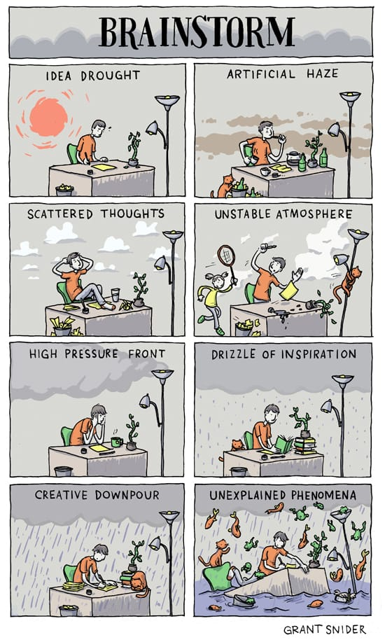

Гонзалес в Париже
Клевый живой концерт Гонзалеса :)
Клевый живой концерт Гонзалеса :)

Ураааа, новый альбом!!!!
На самом деле та знакомая сказала, что я всем интересуюсь, но ничем не увлекаюсь всерьез. Я до сих пор вспоминал это, до сих пор это причиняло мне боль и до сих пор было правдой.
Узнаю кое-кого)) Хорошая книжка.

Или вот We are introverts :)
И даже бесконечно :)
Кайф какой. Вообще, рекомендую все сюиты послушать. Удовольствие непередаваемое!

Лично по мне, так очень хорошо! :)

Еще приятной фоновой музыки.
Улыбаюсь)